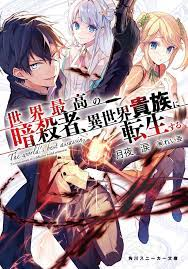

En el mundo cotidiano vive un asesino que es considerado el mejor del mundo, este es utilizado como herraienta en una organización de asesinos mundial, antes de su retiro , la organización mueve cielo y tierra para acabar con el , finalmente lo consiguen tras embarcarle en un avión prometiendole que servira para guiar a otros aprendices de asesino, este reencarna en otro mundo con la idea de que dejara de ser una herramienta y podría vivir su vida, la diosa del otro mundo le concede la petición con la condición última de acabar con el héroe de ese mundo como último trabajo
Lugh es la persona en la que encarna nuestro protagonista, pertenece a una clase noble de ese mundo , situado en una epoca similar entre la edad media y la moderna, este personaje es análiticon inteligente y con grandes habilidades para el asesinato ya que esta familia a parte de ser grandes medicos de la familia real, también son asesinos en la sombra para encargos de la misma
Dia es una de las acompñantes de lugh, es considerada como una de las más poderosas magas de todo el reino su primer contacto fue cuando los padres de lugh la contrataron para enseñar magia al mismo, estos hicieron buenas migas de primeras debido a que a ambos se les considera genios en lo suyo
tarte es otra maga que tras er salvada por lugh esta consiera a nuestro protagonista como su gran salvador y le seguirá haga lo que haga, de puertas para fuera se presenta como una mera asistente pero no es más que otra gran poderosa asesina al servicio de lugh que lo ayudara a cumplir todos sus objetivos.
Esta es la hermana jurada de lugh, que también ha sido salvada gracias a las maquinaciones de lugh, y también ostenta el poder de la magia, al igual que las otras también tiene otra profesión de tapadera, es la encargada de llevar la empresa de cosméticos que tiene lugh mientrás el se encuentra ausente.